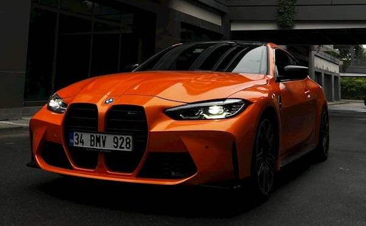

The M4 is motivated by a hearty and responsive twin-turbocharged 3.0-liter inline-six that comes in three levels of tune. The version in the base M4 coupe makes 473 horsepower and 406 pound-feet of torque. With rear-wheel drive and a six-speed manual transmission, it's a powerful and entertaining proposition.
Two powerful icons of sport. The high-performance BMW M4 Competition xDrive Coupe boasts up to 523 hp thanks to the 3.0-liter BMW M TwinPower Turbo inline 6-cylinder gasoline engine. Equally impressive, the BMW M4 Competition xDrive Coupe includes the same powerhouse engine with rear-wheel drive.